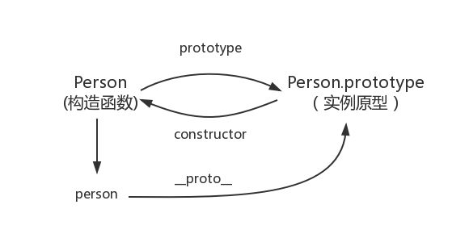

JavaScript 基础之原型与原型链
构造函数创建对象
我们先使用构造函数创建一个对象：
function Person() {
}
var person = new Person();
person.name = 'shun';
console.log(person.name) // shun在这个例子中，Person就是一个构造函数，我们使用 new 创建了个实例对象person。
prototype
每个函数都有一个 prototype 属性，就是我们经常在各种例子中看到的那个 prototype ，比如：
function Person() {
}
// 虽然写在注释里，但是你要注意：
// prototype是函数才会有的属性
Person.prototype.name = 'shun';
var person1 = new Person();
var person2 = new Person();
console.log(person1.name) // shun
console.log(person2.name) // shun那这个函数的 prototype 属性到底指向的是什么呢？是这个函数的原型吗？
其实，函数的 prototype 属性指向了一个对象，这个对象正是调用该构造函数而创建的实例的原型，也就是这个例子中的 person1 和 person2 的原型。
那什么是原型呢？你可以这样理解：每一个JavaScript对象(null除外)在创建的时候就会与之关联另一个对象，这个对象就是我们所说的原型，每一个对象都会从原型”继承”属性。
让我们用一张图表示构造函数和实例原型之间的关系：

在这张图中我们用 Object.prototype 表示实例原型。
那么我们该怎么表示实例与实例原型，也就是 person 和 Person.prototype 之间的关系呢，这时候我们就要讲到第二个属性：
__proto__
这是每一个JavaScript对象(除了 null )都具有的一个属性，叫__proto__，这个属性会指向该对象的原型。
为了证明这一点,我们可以在火狐或者谷歌中输入：
function Person() {
}
var person = new Person();
console.log(person.__proto__ === Person.prototype); // true
于是我们更新下关系图：

既然实例对象和构造函数都可以指向原型，那么原型是否有属性指向构造函数或者实例呢？
constructor
指向实例倒是没有，因为一个构造函数可以生成多个实例，但是原型指向构造函数倒是有的，这就要讲到第三个属性：constructor•，每个原型都有一个 constructor 属性指向关联的构造函数。
为了验证这一点，我们可以尝试：
function Person() {
}
console.log(Person === Person.prototype.constructor); // true于是我们更新下关系图：
既然实例对象和构造函数都可以指向原型，那么原型是否有属性指向构造函数或者实例呢？
constructor
指向实例倒是没有，因为一个构造函数可以生成多个实例，但是原型指向构造函数倒是有的，这就要讲到第三个属性：constructor•，每个原型都有一个 constructor 属性指向关联的构造函数。
为了验证这一点，我们可以尝试：
function Person() {
}
console.log(Person === Person.prototype.constructor); // true所以再更新下关系图：

综上我们已经得出：
function Person() {
}
var person = new Person();
console.log(person.__proto__ == Person.prototype) // true
console.log(Person.prototype.constructor == Person) // true
// 顺便学习一个ES5的方法,可以获得对象的原型
console.log(Object.getPrototypeOf(person) === Person.prototype) // true了解了构造函数、实例原型、和实例之间的关系，接下来我们讲讲实例和原型的关系：
实例与原型
当读取实例的属性时，如果找不到，就会查找与对象关联的原型中的属性，如果还查不到，就去找原型的原型，一直找到最顶层为止。
举个例子：
function Person() {
}
Person.prototype.name = 'Kevin';
var person = new Person();
person.name = 'Daisy';
console.log(person.name) // Daisy
delete person.name;
console.log(person.name) // Kevin
在这个例子中，我们给实例对象 person 添加了 name 属性，当我们打印 person.name 的时候，结果自然为 Daisy。
但是当我们删除了 person 的 name 属性时，读取 person.name，从 person 对象中找不到 name 属性就会从 person 的原型也就是 person.__proto__ ，也就是 Person.prototype中查找，幸运的是我们找到了 name 属性，结果为 Kevin。
但是万一还没有找到呢？原型的原型又是什么呢？
原型的原型
在前面，我们已经讲了原型也是一个对象，既然是对象，我们就可以用最原始的方式创建它，那就是：
var obj = new Object();
obj.name = 'Kevin'
console.log(obj.name) // Kevin
所以原型对象是通过 Object 构造函数生成的，结合之前所讲，实例的 __proto__ 指向构造函数的 prototype ，所以我们再更新下关系图：

原型链
那 Object.prototype 的原型呢？
null，我们可以打印：
console.log(Object.prototype.__proto__ === null) // true
然而 null 究竟代表了什么呢？
引用阮一峰老师的 《undefined与null的区别》 就是：
null 表示“没有对象”，即该处不应该有值。
所以 Object.prototype.__proto__ 的值为 null 跟 Object.prototype 没有原型，其实表达了一个意思。
所以查找属性的时候查到 Object.prototype 就可以停止查找了。
最后一张关系图也可以更新为：

顺便还要说一下，图中由相互关联的原型组成的链状结构就是原型链，也就是蓝色的这条线。
补充
最后，补充三点大家可能不会注意的地方：
constructor
首先是 constructor 属性，我们看个例子：
function Person() {
}
var person = new Person();
console.log(person.constructor === Person); // true
当获取 person.constructor 时，其实 person 中并没有 constructor 属性,当不能读取到constructor 属性时，会从 person 的原型也就是 Person.prototype 中读取，正好原型中有该属性，所以：
person.constructor === Person.prototype.constructor__proto__
其次是 __proto__ ，绝大部分浏览器都支持这个非标准的方法访问原型，然而它并不存在于 Person.prototype 中，实际上，它是来自于 Object.prototype ，与其说是一个属性，不如说是一个 getter/setter，当使用 obj.__proto__ 时，可以理解成返回了 Object.getPrototypeOf(obj)。
真的是继承吗？
最后是关于继承，前面我们讲到“每一个对象都会从原型‘继承’属性”，实际上，继承是一个十分具有迷惑性的说法，引用《你不知道的JavaScript》中的话，就是：
继承意味着复制操作，然而 JavaScript 默认并不会复制对象的属性，相反，JavaScript 只是在两个对象之间创建一个关联，这样，一个对象就可以通过委托访问另一个对象的属性和函数，所以与其叫继承，委托的说法反而更准确些。